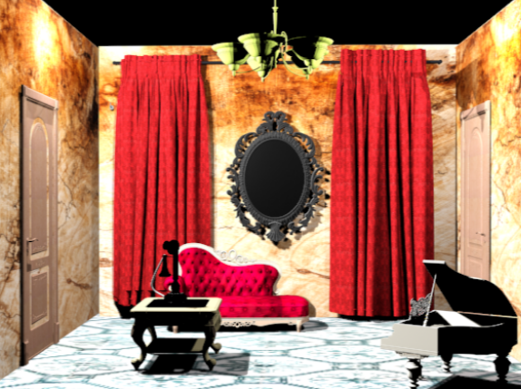

I learned how to design and create 3D models on Autodesk.


Autodesk Modeling Expertise
By offering robust design and engineering software that simplifies the entire modelling process, Autodesk helped me with the creation of this model. Users can produce incredibly accurate and detailed 2D and 3D models for architecture, engineering, manufacturing, and construction with its tools, which include AutoCAD, Revit, and Fusion 360. By facilitating collaboration, real-time visualisation, and simulation, these platforms help teams identify design flaws early on, minimise errors,save time and money. Accessing, editing,sharing models across different disciplines and locations is made simpler by Autodesk's software's integration with cloud-based services.
When using Autodesk software you start to develop...
- 3D Modeling and Design – Learn to create detailed digital models of objects, buildings, or mechanical parts using tools like Fusion 360 or Revit.
- Drafting and Technical Drawing – Gain precision in 2D drafting with AutoCAD, a foundational skill for architects and engineers.
- Parametric Design – Understand how to use parameters and constraints to make intelligent, adaptable models.
- Rendering and Visualization – Learn to produce realistic visualizations and animations of designs for presentations or client approvals.
- Simulation and Analysis – Use built-in tools to test how a design performs under stress, heat, or motion, which improves engineering decisions.
- Collaboration and Project Management – Develop workflows for sharing, reviewing, and managing design data with teams across disciplines.
- BIM (Building Information Modeling) – With Revit, learn to create intelligent building models that integrate architectural, structural, and MEP systems for better coordination.